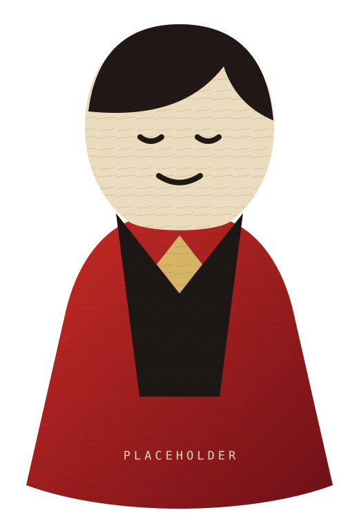

ACT 00 · OPENING
嗨，我是
Komichi.
欢迎来到我的纸片剧场。这里收集好奇心、古怪点子，以及那些慢慢变成现实的小东西。
向下滚动，演出开始
ACT 00 · OPENING
欢迎来到我的纸片剧场。这里收集好奇心、古怪点子，以及那些慢慢变成现实的小东西。
ACT 01 · ABOUT ME
我喜欢把复杂的问题，做成轻盈、直觉且带一点故事感的体验。
ACT 02 · SELECTED WORKS
FINAL ACT · CONTACT
如果你有一个有趣的想法，或只是想来后台打个招呼，欢迎随时联系。
GET IN TOUCH→